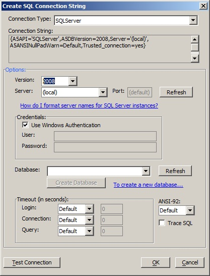
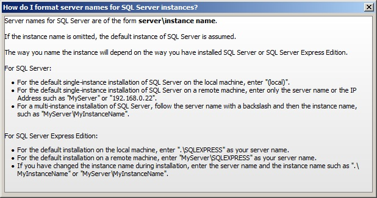

SQL Server connection string dialog help
When you create a connection string for SQL Server, it's easy to forget how to format the instance names.
If you click on the How do I format server names for SQL Server instances? link, you will see a helpful dialog.

If you have forgotten the instance name, you can check it in SQL Server Configuration Manager or SQL Server Management Studio.